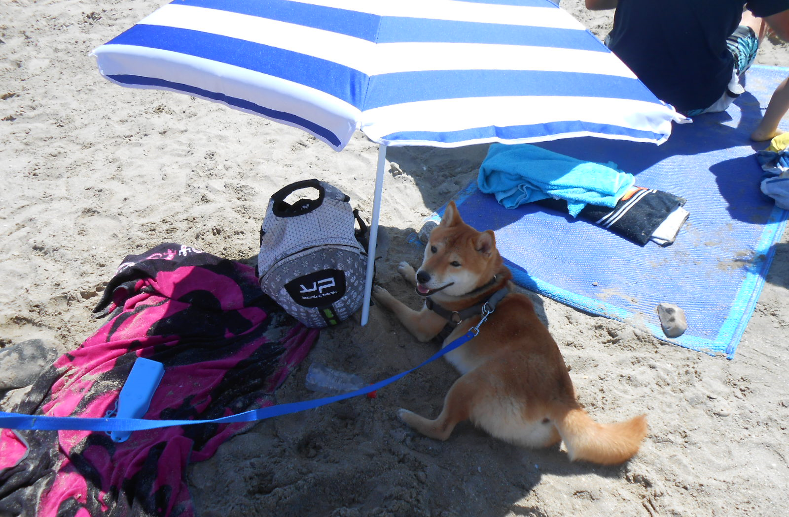
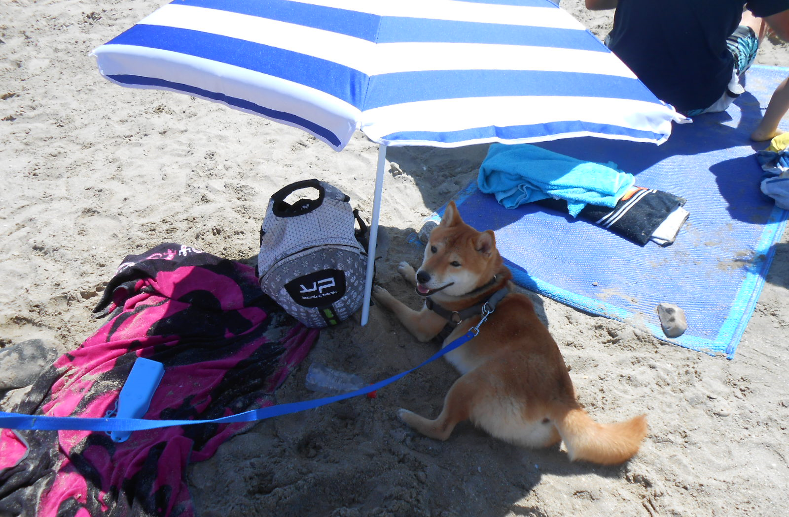

Une passion pour les animaux 🐾
Depuis toujours, les animaux occupent une place essentielle dans ma vie. Prendre soin de mes propres compagnons, chiens et chats, m'a appris la patience, l'adaptabilité et le sens des responsabilités. J'ai également eu des NAC, ce qui m'a permis de mieux comprendre les besoins variés des animaux. En parallèle, je propose des services de petsitting pendant les vacances, une expérience qui demande organisation, réactivité et autonomie, des qualités également essentielles dans le métier de Concepteur Développeur d'Applications, où la gestion des priorités et l'adaptabilité sont primordiales pour mener à bien un projet.
Mon engagement bénévole pour la cause animale 🐾
Offrir du temps et du soutien à une cause qui me tient à cœur est une expérience enrichissante. Prendre soin des animaux, assurer leur bien-être et répondre à leurs besoins spécifiques demandent rigueur, patience et une grande capacité d'adaptation. Cet engagement reflète ma persévérance et mon sens des responsabilités, des valeurs essentielles également dans la gestion de projets en développement d'applications, où il faut s'investir pleinement, collaborer efficacement et trouver des solutions adaptées aux besoins des utilisateurs.
Voyager pour s'inspirer
J'aime explorer la France et découvrir de nouveaux horizons. Chaque voyage est une occasion d'apprendre, de m'adapter à différents environnements et de cultiver ma curiosité. Ces expériences nourrissent ma créativité et ma capacité d'observation, des atouts précieux dans la conception et le développement d'applications, où il est essentiel de penser à l'expérience utilisateur et de créer des solutions adaptées à différents contextes et besoins.
 


La lecture, un voyage sans fin 📚


Lire, c'est s'évader, explorer des mondes inconnus et vivre mille vies sans bouger de chez soi. Plongée dans un roman, je peux me déconnecter du quotidien et laisser libre cours à mon imagination. Cette passion m'a aussi appris à rester concentrée pendant de longues heures, à analyser des intrigues complexes et à m'imprégner de chaque détail. Ces compétences sont essentielles dans le développement d'applications, où il faut être minutieux, structurer son raisonnement et résoudre des problèmes de manière logique et efficace.
Pourquoi le développement d'applications ? 💻
Toutes ces expériences ont forgé ma capacité à apprendre en autonomie, à résoudre des problèmes et à m'adapter à différents contextes. Aujourd'hui, je souhaite appliquer ces compétences dans un domaine stimulant et en constante évolution : le développement d'applications. À travers cette recherche d'alternance, je suis prête à relever de nouveaux défis et à mettre à profit ma rigueur, ma créativité et ma polyvalence pour concevoir des solutions innovantes et adaptées aux besoins des utilisateurs.